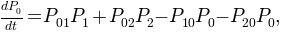
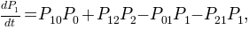
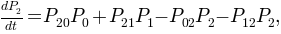
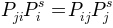
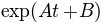

First of all, lets load Pynoramix in our script or in a ipython session:
In [1]: from pynoramix_beta import *
Some basic notions on python will be assumed along this tutorial.
Given a 1D trajectory , its kinetic analysis can be done taking advantage of the class kinetic_1D_analysis. The following subsections are a description of how to deal with this class and the functions included.
See also
The section XXX for the details of this function.
Given a file, traj.oup, with the 1D trajectory in its second column, the class kinetic_1D_analysis can be initialized:
In [2]: kin_test=kinetic_1D_analysis('traj.oup',column=1)
# Trajectory loaded: 999901 time steps
Now, the trajectory is stored in the object kin_test:
In [3]: print 'Column', kin_test.file_column, 'in file', kin_test.file_name
Column 1 in file traj.oup
In [4]: print kin_test.num_particles, 'particles with', kin_test.dimensions, 'dimension', ':', kin_test.length, 'time steps.'
1 particles with 1 dimension: 999901 time steps.
In [5]: print kin_test.traj[:]
[-0.91936072 0.74886578 -1.07525923 ..., -9.09667346 -8.40884264 -8.83918787]
Since the trajectory is a numpy.ndarray, we can take adventage of its numpy intrinsic attributes and functions:
In [6]: print 'Min.:',kin_test.traj.min(),' Mean:', kin_test.traj.mean() ,' Max.:', kin_test.traj.max()
Min.: -11.4344662381 Mean: -3.40808122446 Max.: 2.78106514618
The histogram can be obtained with the following command:
In [7]: hxx,hyy=kin_test.histogram(delta_x=0.20,segment=[-12.0,4.0],norm=False)
In [8]: import pylab as pylab
In [9]: pylab.plot(hxx,hyy,'b-')
Out[10]: [<matplotlib.lines.Line2D object at 0x43277d0>]
In [11]: pylab.show()
At first glance the former distribution can be decompose in three peaks, called macro-states since we know that this histogram is coming from a dynamical system. Actually, the trajectory corresponds to the projection onto an arbitrary coordinate of a langevin dynamics of a particle embeded in a 2D potential.
According to this first superficial analysis, the particle moves through a landscape with 3 basins (green, orange, blue) separated by 2 barriers (green-orange and orange-blue). Thereby, the particle goes from green to blue region bymeans of a necessary visit to the region orange.
A first order kinetic model can be computed with these three states. The model should be written as a master equation where the transition probabilities, or rates, between macrostates interplay to mimic the macroscopical dynamical behavior observed in the experiment.
These transition probabilities are computed from the following trajectory:
In [6]: for xx in kin_test.traj[:]:
...: if xx <=-5.5:
...: kin_test.traj_clusters.append(0) # Green region
...: elif xx <=-2.3:
...: kin_test.traj_clusters.append(1) # Orange region
...: else:
...: kin_test.traj_clusters.append(2) # Blue region
...:
Notice that the term ‘cluster’ was used: a set of time steps belonging to the same macrostate. This way the cluster labeled ‘0’ corresponds to region green, ‘1’ to the orange one and ‘2’ to the blue. The transition probabilities can be computed building the corresponding kinetic network, or conformational space network. The trajectory is mapped into a network where weighted nodes and directed links accounts to the occupation of the clusters and the number of transitions among them.
In [7]: kin_test.kinetic_network(traj='clusters',verbose=True)
# Network:
# 3 nodes
# 9 links out
# 999900.0 total weight nodes
Before getting the transision probabilities, or rates, detailed balance condition is impossed symmetrising the network.
In [8]: kin_test.network_clusters.symmetrize(new=False,verbose=False)
In [9]: kin_test.network_clusters.info()
# Network:
# 3 nodes
# 9 links out
# 1999800.0 total weight nodes
See also
The section XXX for the details of this function.
The network we have now is nothing but a kinetic model respresented as a graph. This way the master equations:
  can be written with the transition probabilities:
In [10]: for ii in range(3):
....: ww=kin_test.network_clusters.node[ii].weight
....: for jj in range(3):
....: if ii!=jj :
....: print 'P'+str(jj)+str(ii)+'=', kin_test.network_clusters.node[ii].link[jj]/ww
....:
P10= 0.00134372002214
P20= 0.000153059499211
P01= 0.00190455529265
P21= 0.0749385749386
P02= 8.25724981733e-05
P12= 0.0285230372469
Where detailed balance condition, , is fullfilled by construction. Thereby, the stationary solution of this master equation is given by the occupation probabilities given found as weights of nodes.
In [11]: ww=kin_test.network_clusters.weight
In [12]: for ii in range(3):
....: print 'P'+str(ii)+'^s =', kin_test.network_clusters.node[ii].weight/ww
....:
P0^s = 0.28096459646
P1^s = 0.198228822882
P2^s = 0.520806580658
We can now compare our kinetic model with the behavior observed in the original trajectory. This can be done attending to magnitudes as the mean dwell/life time and its distribution or the mean first passage time and its distribution.
Up to here, in this tutorial we have built a kinetic model from a 1D trajectory. Now the accuracy of the model can be checked with observables as the life time of its macro-states.
First of all, the life time distribution of the 3 macro-states can be computed from our clusters trajectory.
In [13]: ltx_1,lty_1=kin_test.life_time(traj='clusters',state=1,norm=True,verbose=True)
# Mean life time: 16.3446993094 frames.
In [14]: ltx_2,lty_2=kin_test.life_time(traj='clusters',state=2,norm=True,verbose=True)
# Mean life time: 34.0213561056 frames.
Note
This analysis was applied not to the trajectory found in the file ‘traj.oup’ but to a trajectory 10 times larges.
See also
Function for further details.
The distributions can be fitted to exponential functions: . The next plot shows the fitting together with the distributions, where approximately A=-0.008 and B=-9.763 for cluster 1 (orange), and A=-0.026 and B=-7.311 for cluster 2 (blue).
We observe how the long time behavior fits to an exponential distribution but many non expected short life events appear.
Now, we can compare with the life time distributions obtained by the kinetic model although from the previous plot we can guess that our clusters are not well defined. To this aim a random walker over the kinetic network can be run according to the transition probabilities.
In [15]: bw_traj=kin_test.network_clusters.brownian_walker(origin=0,length=10000000)
In [16]: bw=kinetic_1D_analysis(bw_traj)
# Trajectory loaded: 10000001 time steps
In [17]: ltbw_x_1,ltbw_y_1=bw.life_time(state=1,norm=True,verbose=True)
# Mean life time: 16.2835161764 frames.
In [18]: ltbw_x_2,ltbw_y_2=bw.life_time(state=2,norm=True,verbose=True)
# Mean life time: 34.1362159764 frames.
This time the distributions and their exponential fits, A=-0.068 and B=-5.504 for cluster 1 (orange) and A=-0.029 and B=-7.034 for cluster 2 (blue), shows a different behavior:

We can see how, although the mean life time (in [13],[14] and [17],[18]) are similar, the relaxations times are different from those previously computed. Cluster 1 (orange) has a faster relaxation than Cluster 2 (blue). It is up to the reader trying to understand the origin of these different behaviors, even with the same mlt (check section XXX to find some help).
These observations point to the possibility of having a bad kinetic description of our system, but before showing how to do it better, lets check another kinetic magnitude: the first passage time distribution.
Following the same strategy as in the previous section, we can compare some distributions computed over the original clusters trajectory and over its kinetic model. The first passage time distribution can be computed to a certain state from a given state or from any one (Global first passage time).
The original clusters trajectory shows the following distributions for this three different cases: the Global first passage time to cluster 2 (blue), from cluster 0 (green) to cluster 2 and from cluster 1 (orange) to cluster 2.
In [19]: fptx2,fpty2=kin_test.first_passage_time(traj='clusters',to_state=2,norm=False,verbose=True)
# Mean first passage time: 700.403755073 frames.
In [20]: fptx02,fpty02=kin_test.first_passage_time(traj='clusters',from_state=0,to_state=2,norm=False,verbose=True)
# Mean first passage time: 1175.03303483 frames.
In [21]: fptx12,fpty12=kin_test.first_passage_time(traj='clusters',from_state=1,to_state=2,norm=False,verbose=True)
# Mean first passage time: 124.958081567 frames.
There are two things not expected in this plot. The short time behavior looks anomalous and both distributions ‘1 to 2’ and ‘0 to 2’ should be bi-exponential. Since we made the first guest of having the particle going from 0 to 2 with a necessary stay in cluster 1, this distribution should be bi-exponential.
Now, we can compare with the first passage time distributions obtained by the kinetic model. As it was done with the life time distributions, a random walker over the kinetic network can be run according to the transition probabilities.
In [22]: bw_traj=kin_test.network_clusters.brownian_walker(origin=0,length=9999000)
In [23]: bw=kinetic_1D_analysis(bw_traj,verbose=False)
In [24]: fptbwx2, fptbwy2= bw.first_passage_time(to_state=2,norm=False,verbose=True)
# Mean first passage time: 430.700895225 frames.
In [25]: fptbwx02,fptbwy02=bw.first_passage_time(from_state=0,to_state=2,norm=False,verbose=True)
# Mean first passage time: 751.240082388 frames.
In [26]: fptbwx12,fptbwy12=bw.first_passage_time(from_state=1,to_state=2,norm=False,verbose=True)
# Mean first passage time: 36.4134420305 frames.
This time we at least observe a bi-exponential behavior in the ‘1 to 2’ distribution in agreement with our first guess. But if we compare the relaxation times, by simple inspection we conclude that distributions are different from those obtained before from the clusters trajectory, even the mean first passage times are different (in [19-21] and [24-26]).
These analysis reinforce the idea of having a wrong analysis, the way we have define the macro-states or cluster is not kinetically consistent. But before improving this analysis, let see one kinetic observable more: what we have define as first committed passage time (from the magnitude: committor probabilities)
It is up to the reader trying to understand the origin of these different behaviors (check section XXX to find some help).
In Physics of stochastic processes the committor probability, C_{a,b}, is the probability of going from b to a without passing through any other state. Based on this idea, we can compute the first passage time from a state b to a with a requirement: passing or not by other states.
In this tutorial we defined 3 macro-states or clusters from a 1D trajectory (see above). And in our naive first analysis we made an observation: to go from cluster 0 (green) to cluster 2 (blue), a visit to cluster 1 (orange) is needed. For the sake of completeness lets study the first passage time of going from 0 to 2 with and without passing by cluster 1.
In [27]: fcptx012,fcpty012=kin_test.first_committed_passage_time(traj='clusters',states=[0,1,2],commitment=[True,True,True],norm=False,verbose=True)
# Mean first passage time: 888.282178077 frames.
In [28]: fcptx0no12,fcpty0no12=kin_test.first_committed_passage_time(traj='clusters',states=[0,1,2],commitment=[True,False,True],norm=False,verbose=True)
# Mean first passage time: 861.446234118 frames.

The first passage time distribution of going from 0 to 2 without passing by 1 it is not negligible as we assumed at the begining of this tutorial just looking at the histogram.
The kinetic model shows also a similar behavior:
In [29]: fcptbwx012,fcptbwy012=bw.first_committed_passage_time(states=[0,1,2],commitment=[True,True,True],norm=False,verbose=True)
# Mean first passage time: 705.085477589 frames.
In [30]: fcptbwx0no12,fcptbwy0no12=bw.first_committed_passage_time(states=[0,1,2],commitment=[True,False,True],norm=False,verbose=True)
# Mean first passage time: 682.339500433 frames.

But in this distributions, the life time of each stay in 0 is included (as with the first passage time). Let see how in the next section we can remove this the several independent trips origin by this fact.
An other kinetic magnitude we can observe is the time distribution of those segments of trajectory in between the stay of an initial cluster or macro-state and the arrival to an other certain cluster. In this case, unlike the first passage time, not every single step in the initial cluster accounts for the distribution.
Lets check the trip time distribution from cluster 0 to cluster 2:
In [31]: tt02x,tt02y=kin_test.trip_time(traj='clusters',from_state=0,to_state=2,verbose=True)
# Mean first passage time: 295.365182591 frames.
In [32]: ttbw02x,ttbw02y=bw.trip_time(from_state=0,to_state=2,verbose=True)
# Mean first passage time: 33.0993065874 frames.
Once more the kinetics observed in the model is different from what can be computed in the trajectory. This observation points, once again, to the fact of having a wrong built kinetic model.
While in the kinetic model the trip time looks like single exponential, two different time scales (two different mechanisms driving the particle from 0 to 1) are observed from the trajectory. And this time is clear that the first fast decay (steps<=10) is shorter than the tipical life time of the intermediate cluster 1 (mfpt1~=16). Again, we have evidences of straight 0 to 2 jumps not expected looking at the histogram. This can lead us to invest our precious time trying to answer: How is this mechanism not previously expected? But as we will see shortly, this fact it is just an artifact. In addition, if we look in detail to the distribution from the trajectory, the point at steps=1 does not take part of any of the hypothetical mechanisms. Its value (tt(1)) is high enough to be considered as noise. There is probably 3 different mechanisms, and only the long time noisy tail makes sense for us given that its time range is comparable with the life time distribution of the intermediate cluster 1.
We could also argue that, if along the trip the initial state is visited again, this stay is observed as part of the trip. If we want to discard this events the option ‘no_return’ is required:
In [33]: tt02x,tt02y=kin_test.trip_time(traj='clusters',from_state=0,to_state=2,no_return=True,verbose=True)
# Mean first passage time: 10.895183175 frames.
In [34]: ttbw02x,ttbw02y=bw.trip_time(from_state=0,to_state=2,no_return=True,verbose=True)
# Mean first passage time: 15.7288866345 frames.
The observations we can make are the same written above. The kinetic model does not offer a good representation of the system. Regarding the clusters trajectory, those jumps observed in just one time step could be not expected straight transitions. But whats the first exponential decay? Is it physically meaninful? The next section can help us to enlight the question.
Similar as it was done for the first committed passage time (see section XXX), we can also study committed trip distributions (see section above).
Let see the trip time distribution of going from 0 to 2 passing by cluster 1 or going straightforward without visiting the intermediate cluster.
In [35]: tt012x,tt012y=kin_test.committed_trip_time(traj='clusters',states=[0,1,2],commitment=[True,True,True],no_return=True,verbose=True)
# Mean first passage time: 12.2196153846 frames.
In [36]: tt0no12x,tt0no12y=kin_test.committed_trip_time(traj='clusters',states=[0,1,2],commitment=[True,False,True],no_return=True,verbose=True)
# Mean first passage time: 1.0 frames.
It is clear now that the one step trips are straight transitions 0 to 1. We can now state that there are two time scales or mechanisms over the path 0 to 1 to 2. We can again wonder what the origin of this is. But as we will see later, there is not such misterious hidden mechanism, not even logical transitions 0 to 2 with expected standard stays in cluster 1.
This could not be unveiled just looking at our kinetic model, because it is not properly built up.
In [37]: ttbw012x,ttbw012y=bw.committed_trip_time(states=[0,1,2],commitment=[True,True,True],no_return=True,verbose=True)
# Mean first passage time: 17.24049217 frames.
In [38]: ttbw0no12x,ttbw0no12y=bw.committed_trip_time(states=[0,1,2],commitment=[True,False,True],no_return=True,verbose=True)
# Mean first passage time: 1.0 frames.

Although there exist straight transitions from 0 to 2 in just one time step, it is part of the same mechanism (exponential decay). The saving frequency of the trajectory could be large enough to see straight transitions when they briefly visited cluster 1.
It is up to the reader trying to understand the origin of these different behaviors (in the next section some help can be found).
The wrong description will change with the saving frequency, the good one no.
We have study along the tutorial a dynamical system which, according to what was previously computed: we have 3 clusters with strange life time distributions at short times, with strange first passage times, and with direct transitions 0 to 1, and with two different mechanisms of transitions 0 to 1 to 2.
But we have important doubts about our study: the kinetic model does not reproduce the kinetics from the trajectory. The three cluster with which the model was built are not well defined. Have a look to a piece of trajectory to understand all the previous results and conclussions:
The colors correspond to the three macro-states or clusters comming from the barriers observed in the histogram (XXX).
It is up to the reader understanding now how the description obtained before matches with the wrong definition of macro-states.
But the trajectory was a projection onto one dimmension of a dynamics embedded in a larger dimensional space (2 in this case). Before propossing how to get a better description, a better kinetic model, let see how the system behaves in the original 2 dimmensions:
The trajectory studied was the projection over the black axe. Knowing now that we can define the three macro-states, clusters or basins of attraction, with the barriers X=-5.5 and Y=5.5, we can rebuild the histogram:
We understand now why, trying to understand the mechanisms of transition 0 to 1 to 2 made no sense. Actually, there are no such transitions, they were just an artifact.
With these three well defined clusters we can have a look now to the kinetic magnitudes previously computed for the wrong model.
In [11]: original_clusters=[]
In [12]: for ii in traj:
....: if (ii[0]<-5.50):
....: original_clusters.append(0)
....: elif (ii[1]>5.50):
....: original_clusters.append(2)
....: else:
....: original_clusters.append(1)
....:
In [16]: kin_test.traj_clusters=original_clusters
In [17]: kin_test.kinetic_network(traj='clusters',verbose=True)
# Network:
# 3 nodes
# 7 links out
# 9999000.0 total weight nodes
In [59]: ltx_1,lty_1=kin_test.life_time(traj='clusters',state=1,norm=False,verbose=True)
# Mean life time: 4919.53658537 frames.
In [60]: ltx_2,lty_2=kin_test.life_time(traj='clusters',state=2,norm=False,verbose=True)
# Mean life time: 1247.09804915 frames.
Long life times comparable with long traj.
In [78]: fptx2,fpty2=kin_test.first_passage_time(traj='clusters',to_state=2,norm=False,verbose=True)
# Mean first passage time: 3123.39159882 frames.
In [79]: fptx02,fpty02=kin_test.first_passage_time(traj='clusters',from_state=0,to_state=2,norm=False,verbose=True)
# Mean first passage time: 995.111802212 frames.
In [80]: fptx12,fpty12=kin_test.first_passage_time(traj='clusters',from_state=1,to_state=2,norm=False,verbose=True)
# Mean first passage time: 5863.2847721 frames.

The order is different. I have to writte before that the kinetics was absurdo. 0 to 2 was faster than 1 to 2 even with a barrier higher. It is not possible since it has to go through 1. The times are also different.
Having an apparantly exponential behavior it is not saying that our kinetics is ok.

First committed_passage_time:
In [136]: fcptx012,fcpty012=kin_test.first_committed_passage_time(traj='clusters',states=[0,1,2],commitment=[True,True,True],norm=False,verbose=True)
# Mean first passage time: 0.0 frames.
In [137]: fcptx0no12,fcpty0no12=kin_test.first_committed_passage_time(traj='clusters',states=[0,1,2],commitment=[True,False,True],norm=False,verbose=True)
# Mean first passage time: 995.111802212 frames.
In [138]: tt02x,tt02y=kin_test.trip_time(traj='clusters',from_state=0,to_state=2,verbose=True)
# Mean first passage time: 1.0 frames.
But can we define a good kinetic model without going to the original 2-dimensional trajectory? The next section shows how this can be done.
And to compare with the kinetic model coming from the 2D trajectory, the Global First Passage Time distribution to cluster blue, and from green or orange to blue, can be computed. With this aim we can create a trajectory from a brownian walker over the kinetic network (see XXX).
In [16]: bw_traj=kin_test.network_clusters.brownian_walker(origin=0,length=9999000)
In [17]: bw=kinetic_1D_analysis(bw_traj,verbose=False)
In [18]: fptbwx2, fptbwy2= bw.first_passage_time(to_state=0,norm=False,verbose=True)
# Mean first passage time: 2128.84780171 frames.
In [19]: fptbwx02,fptbwy02=bw.first_passage_time(from_state=1,to_state=0,norm=False,verbose=True)
# Mean first passage time: 1060.31735473 frames.
In [20]: fptbwx12,fptbwy12=bw.first_passage_time(from_state=2,to_state=0,norm=False,verbose=True)
# Mean first passage time: 3571.33044323 frames.
See also
The section XXX for the details of this function.
Warning
Please cite the following reference if the method is used for a scientific publication: XXXXXXX
{kind=link}
{kind=link}
{kind=link}
{kind=link}
{kind=link}
{kind=link}
{kind=link}
{kind=link}
{kind=link}
{kind=link}
{kind=link}
{kind=link}